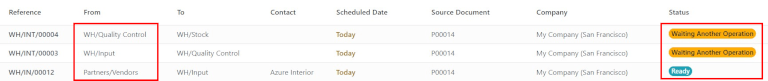
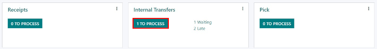
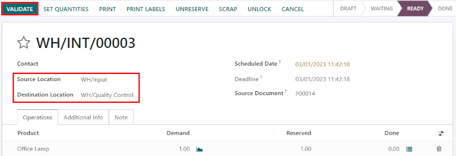

Procesar recepciones en tres pasos¶
Algunas empresas requieren de un proceso de control de calidad antes de recibir los bienes de los proveedores. Para hacerlo, Odoo cuenta con un proceso de tres pasos.
En el proceso de recepción en tres pasos, se reciben los productos en un área de entrada y luego se transfieren a un área de calidad para su inspección. Los productos que pasan la inspección de calidad se transfieren a las existencias. Los productos no se podrán procesar hasta que salgan del área de calidad y se muevan a las existencias.
Configuración¶
Odoo está configurado para recibir y enviar bienes en un paso de manera predeterminada, entonces deberá cambiar la configuración para utilizar las recepciones en tres pasos. Primero, asegúrese de que la opción Rutas multietapa esté habilitada en . Tenga en cuenta que al activar las Rutas multietapa también activará las ubicaciones de almacenamiento.

A continuación, es necesario configurar el almacén para las recepciones en tres etapas. Para ello, vaya a , y seleccione el almacén que desea editar. Al hacerlo, aparecerá el formulario de detalle de ese almacén en concreto.
En esa página de formulario de Almacén seleccione Recibir artículos en la ubicación de entrada, trasladar a control de calidad y luego llevar a existencias (3 pasos) para

Activar la recepción y entrega en tres pasos crea dos nuevas ubicaciones internas: Entrada (WH/Entrada) y un Control de calidad (WH/Control de calidad). Para cambiar el nombre de estas ubicaciones, vaya a la , haga clic en la ubicación para la que desea modificar (o actualizar) el nombre.
Recibir en 3 pasos (entrada + control de calidad + existencias)¶
Crear una orden de compra¶
Para crear una nueva cotización, vaya a la , se abrirá una página con un formulario de cotización en blanco. Una vez allí, seleccione un cliente, agregue un producto almacenable y haga clic en Confirmar orden.
Aparecerá un botón inteligente de Recepción en la parte superior derecha, estará asociada a una orden de compra. Al hacer clic en el botón inteligente de Recepción, aparecerá la orden de recepción.

Procesar una recepción¶
Una vez que confirme la orden de venta, se creará una recepción y dos traslados internos (un traslado hacia calidad y otra sucesiva a existencias). Para ver estos traslados, vaya a .
El estado del traslado de la recepción de los productos a la ubicación de entrada será Listo, pues la recepción se debe procesar antes de hacer cualquier otra operación. El estado de los dos traslados internos será En espera de otra operación, ya que las transferencias no se pueden procesar hasta que el paso que se debe completar primero antes de cada movimiento esté completado.
El estado del primer traslado interno hacia calidad cambiará su estado a Listo cuando la recepción se marque como Hecho. El estado del segundo traslado interno hacia existencias cambiará su estado a Listo solo después de que el traslado hacia calidad se haya marcado como Hecho.
También puede encontrar la recepción en la aplicación . En la Vista general del tablero, haga clic en el botón inteligente 1 Por procesar en la tarjeta kanban de Recepciones.

Haga clic en la recepción asociada con la orden de compra, luego haga clic en Validar para completar la recepción y mover el producto a la Ubicación de entrada.

Procesar un traslado a Control de calidad¶
Una vez que el producto está en la ubicación de entrada, el traslado interno estará listo para mover el producto al Control de calidad. En el tablero de información general de , haga clic en el botón inteligente 1 Por procesar en la tarjeta kanban de Traslados internos.
Haga clic en el traslado asociado con la orden de compra, luego haga clic en Validar para completar el traslado y mover el producto a la ubicación de Control de calidad. Una vez validado el traslado, el producto estará listo para la inspección de calidad, pero no estará disponible para las ordenes de fabricación o de envío.
Procesar un traslado a existencias¶
Una vez que el producto está en la ubicación de Control de calidad, la transferencia interna final estará lista para mover el producto a Existencias. En la vista general del tablero de Inventario, haga clic en el botón inteligente 1 Por procesar en la tarjeta kanabn de Transferencias internas.
Haga clic en el traslado final asociado con la orden de compra, luego haga clic en Validar para completarlo y mover el producto a las existencias. Una vez validada la transferencia, el producto estará disponible en las existencias para enviar los clientes o para ordenes de fabricación.